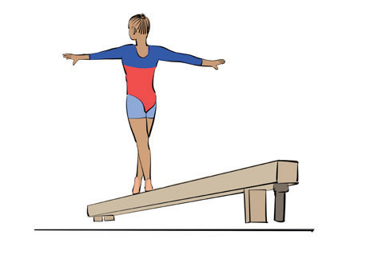
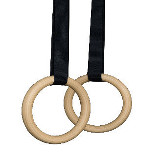
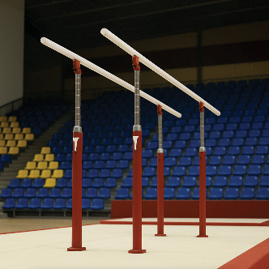
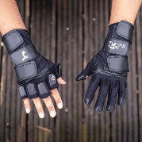
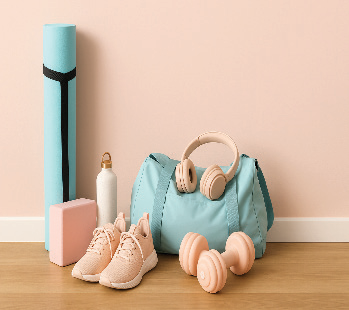

4. Balance beam |  | A narrow wooden beam, covered with suede or similar material, used in women’s gymnastics. |
5. Still rings orHang rings |  | Two suspended rings are used in men’s gymnastics for strength-based routines. The gymnast must control movements while performing holds, swings, and dismounts. |
6. Parallel bars |  | Two bars set at equal height and parallel to each other, used in men’s gymnastics for swinging, vaulting, and strength-based movements. |
7. Gloves/wristguard/ grips |  | Wrist guards are used to stabilize the wrist joints, especially during handstands, tumbling, and bar routines. |
8. Personal kit |  | A gymnast’s equipment, such as grips, wristbands, tape, chalk powder, and other essentials are needed for training and competition. |